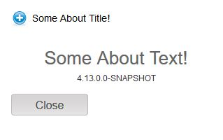
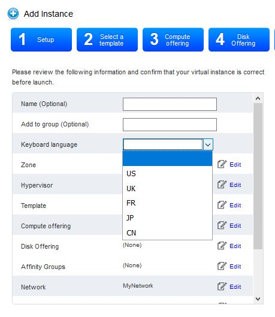
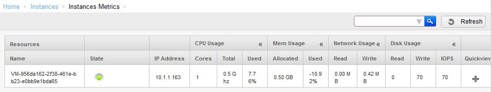
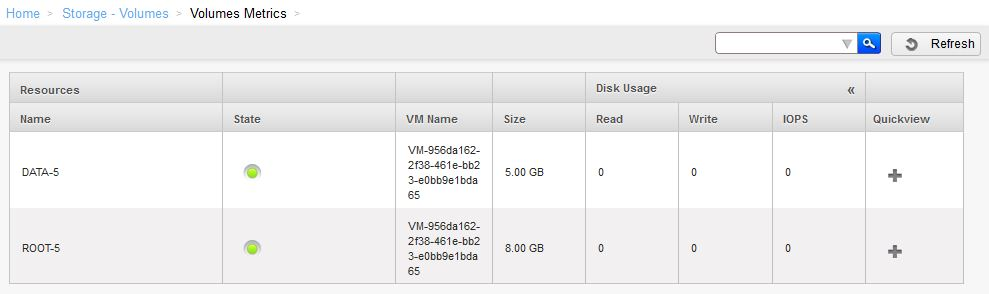

登录 UI¶
CloudStack provides a web-based UI that can be used by both administrators and end users. The appropriate version of the UI is displayed depending on the credentials used to log in. The UI is available in popular browsers including IE7, IE8, IE9, Firefox 3.5+, Firefox 4, Safari 4, and Safari 5. The URL is: (substitute your own management server IP address)
http://<management-server-ip-address>:8080/client
On a fresh 管理服务 installation, a guided tour splash screen appears. On later visits, you’ll see a login screen where you specify the following to proceed to your Dashboard:
Username -> The user ID of your account. The default username is admin.
Password -> The password associated with the user ID. The password for the default username is password.
Domain -> If you are a root user, leave this field blank.
If you are a user in the sub-domains, enter the full path to the domain, excluding the root domain.
For example, suppose multiple levels are created under the root domain, such as Comp1/hr. The users in the Comp1 domain should enter Comp1 in the Domain field, whereas the users in the Comp1/sales domain should enter Comp1/sales.
For more guidance about the choices that appear when you log in to this UI, see Logging In as the Root Administrator.
End User’s UI 概述¶
The CloudStack UI helps users of cloud infrastructure to view and use their cloud resources, including virtual machines, templates and ISOs, data volumes and snapshots, guest networks, and IP addresses. If the user is a member or administrator of one or more CloudStack projects, the UI can provide a project-oriented view.
Root Administrator’s UI 概述¶
The CloudStack UI helps the CloudStack administrator provision, view, and manage the cloud infrastructure, domains, user accounts, projects, and configuration settings. The first time you start the UI after a fresh 管理服务 installation, you can choose to follow a guided tour to provision your cloud infrastructure. On subsequent logins, the dashboard of the logged-in user appears. The various links in this screen and the navigation bar on the left provide access to a variety of administrative functions. The root administrator can also use the UI to perform all the same tasks that are present in the end-user’s UI.
Logging In as the Root Administrator¶
After the 管理服务 software is installed and running, you can run the CloudStack user interface. This UI is there to help you provision, view, and manage your cloud infrastructure.
Open your favorite Web browser and go to this URL. Substitute the IP address of your own 管理服务:
http://<management-server-ip-address>:8080/client
After logging into a fresh 管理服务 installation, a guided tour splash screen appears. On later visits, you’ll be taken directly into the Dashboard.
If you see the first-time splash screen, choose one of the following.
Continue with basic setup. Choose this if you’re just trying CloudStack, and you want a guided walkthrough of the simplest possible configuration so that you can get started right away. We’ll help you set up a cloud with the following features: a single machine that runs CloudStack software and uses NFS to provide storage; a single machine running VMs under the XenServer or KVM hypervisor; and a shared public network.
The prompts in this guided tour should give you all the information you need, but if you want just a bit more detail, you can follow along in the Trial 安装指南.
I have used CloudStack before. Choose this if you have already gone through a design phase and planned a more sophisticated deployment, or you are ready to start scaling up a trial cloud that you set up earlier with the basic setup screens. In the Administrator UI, you can start using the more powerful features of CloudStack, such as advanced VLAN networking, high availability, additional network elements such as load balancers and firewalls, and support for multiple hypervisors including Citrix XenServer, KVM, and VMware vSphere.
The root administrator Dashboard appears.
You should set a new root administrator password. If you chose basic setup, you’ll be prompted to create a new password right away. If you chose experienced user, use the steps in Changing the Root Password.
Warning
You are logging in as the root administrator. This account manages the CloudStack deployment, including physical infrastructure. The root administrator can modify configuration settings to change basic functionality, create or delete user accounts, and take many actions that should be performed only by an authorized person. Please change the default password to a new, unique password.
Changing the Root Password¶
During installation and ongoing cloud administration, you will need to log in to the UI as the root administrator. The root administrator account manages the CloudStack deployment, including physical infrastructure. The root administrator can modify configuration settings to change basic functionality, create or delete user accounts, and take many actions that should be performed only by an authorized person. When first installing CloudStack, be sure to change the default password to a new, unique value.
Open your favorite Web browser and go to this URL. Substitute the IP address of your own 管理服务:
http://<management-server-ip-address>:8080/client
Log in to the UI using the current root user ID and password. The default is admin, password.
Click Accounts.
Click the admin account name.
Click View Users.
Click the admin user name.
Click the Change Password button.

Type the new password, and click OK.
定制修改 UI¶
Root Administrators can modify some aspect of the UI, like:
- Changing the keyboard names/labels (in the “Add Instance” wizard only)
- Changing the text and the title in the “About” dialog box
- Changing the Help link
- Changing the application title on the browser tab
- Hiding some columns in the Instance Metrics and Volume Metrics tables/views
This can be done by editing the file “/usr/share/cloudstack-management/webapp/config.js” on your management server(s). After the file change, you do need to clear your browser cache. Hiding columns in Instance Metrics and Volume Metrics tables/views is only applicable to end users - i.e. those are always visible to Root Administrators.
This is the default config.js content (comments ommitted for brevity):
cloudStackOptions = {
aboutText: "label.app.name", // This is the text shown in the 'About' box
aboutTitle: "label.about.app", // This is the Application 'Title' shown in the 'About' box
docTitle: "label.app.name", // This is the Application 'Title' shown on browser tab.
helpURL: "http://docs.cloudstack.apache.org/", // This is the URL that opens when users click Help
keyboardOptions: {
"us": "label.standard.us.keyboard",
"uk": "label.uk.keyboard",
"fr": "label.french.azerty.keyboard",
"jp": "label.japanese.keyboard",
"sc": "label.simplified.chinese.keyboard"
},
hiddenFields: { // Fields to be hidden only for users in the tables below
"metrics.instances": [], // Options - "name", "state", "ipaddress", "zonename", "cpuused", "memused", "network", "disk"
"metrics.volumes": [] // Options - "name", "state", "vmname", "sizegb", "physicalsize", "utilization", "storagetype", "storage"
}
};
Example of a changed config.js file is given bellow, as well as the apropriate screenshots which reflect (most of) those changes. Make sure that you are logged in as end user account.
cloudStackOptions = {
aboutText: "Custom About text!", // This is the text shown in the 'About' box
aboutTitle: "Custom About Title!", // This is the Application 'Title' shown in the 'About' box
docTitle: "MyCloud", // This is the Application 'Title' shown on browser tab.
helpURL: "http://help.mycloud.com/", // This is the URL that opens when users click Help
keyboardOptions: {
"us": "US",
"uk": "UK",
"fr": "FR",
"jp": "JP",
"sc": "CN"
},
hiddenFields: { // Fields to be hidden only for users in the tables below
"metrics.instances": ["zonename"], // Options - "name", "state", "ipaddress", "zonename", "cpuused", "memused", "network", "disk"
"metrics.volumes": ["utilization"] // Options - "name", "state", "vmname", "sizegb", "physicalsize", "utilization", "storagetype", "storage"
}
};

Notice custom title and text

Notice short keyboard names (based on country code)

Notice “Zone” column is hidden

Notice “Utilisation” column is hidden